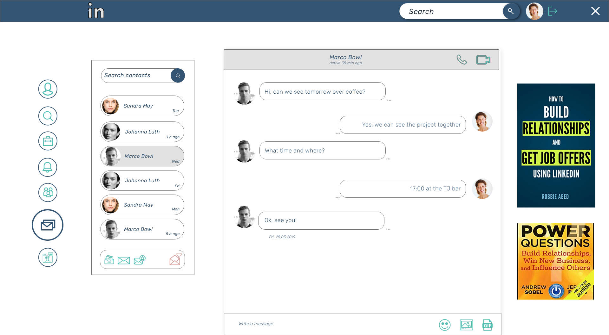

Redesign LinkedIn page
My approach
LinkedIn is a large and complex website used by a great number of users. I found it to ba a chalenging school project to work on its redesign. After doing research on my profile, I realised that there were many things that can be improved. So, i started writing down all my ideas. I started sketching and bringing ideas of the redesign, starting with the login page.
As I continiued, I realised that the page is made difficult for a person to use it. I like things to be simple and easy to use so, I tried making it simple, using more icons then text to keep the page clean and easy to use.
This is the icon set I choose
And the color palette used for this project
Rubik Font because it is very nice and modern
Aa Bb Cc
0, 1, 2, 3
The LinkedIn log in page
is the page that has too much informations, so i just made it simple and easy to use.

The LinkedIn Home page
The home page as a representational page, needs to show all the important informations for the user so the recruters can have immediate overlook of the person they want to hire.
The linkedIn home page has the important informations for the user somewhere on the bottom so, I just reorganized and put the important personal informations on top. Added part where the user can add links of the projects from the social or development apps.
I also changed the menu and put icons insted of a regular menu, making it more modern and interesting.

i also made some change of the notification screen

And the messages screen

I would appreciate a feedback from you!